ピボットテーブル
Wks-Pivot-Table
ピボットテーブルは、データ分析ソフトの一般的なデータサマリーツールです。テーブルは、変数の数を越えて収集された観測からなるデータセットを取ることによって構築され、目的の2つのカテゴリ変数、たとえばVar1 とVar2 を選びます。そして、Var1 のすべての可能な値をテーブルの行で定義し、Var2 のすべての可能な値は、列で定義します。テーブルセルには、行と列の値の交点による値が含まれます。ピボットテーブルは、var1を行、var2 を列、ピボットテーブルのデータを行列の要素とした行列によく似ています。ピボットテーブルの分析テンプレートを保存することで、他のデータセットに対して似たようなデータサマリーを素早く作成することができます。
Originのピボットテーブルは、以下のことが可能です。
- カウントによるデータのサマリー、合計、平均、最大/最小値のレポート
- 行と列の合計
- 出力行と列を、行の合計またはラベルでソート
- 分数またはパーセント値による正規化
- 小さな値を統合して「その他」の列に入れる
- パラメータの調整と簡単な再計算
このツールを開くには
- 分析するワークシートをクリックします。
- データ整形：ピボットテーブルをクリックしてwpivotダイアログを開きます。
wpivotダイアログはwpivot X-ファンクションを使用します。
ダイアログオプション
- 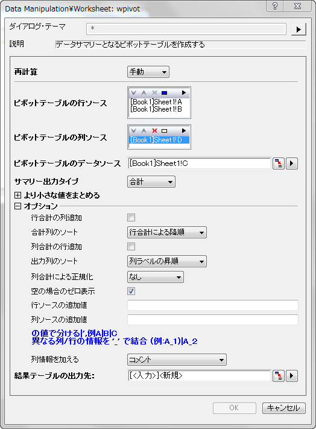
ピボットテーブルの行ソース
ピボットテーブルの行ソースとして使用される列範囲を指定します。行ソース範囲内の同じ名前のソースワークシートのデータは、ピボットテーブルでは単一の行として表示されます。次のダイアグラムは行ソースの定義について説明しています。 1つ以上のデータ範囲をピボットテーブルの行ソースとして選択できます。
次のダイアグラムでは、ピボットテーブル内の複数行ソースの定義について説明しています。
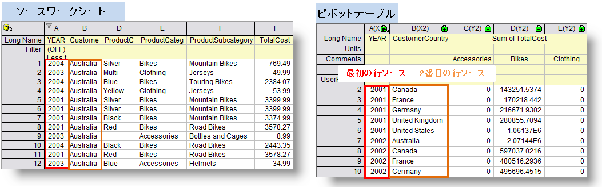
この項目に表示ボックスと5つのボタン のついたツールバーがあります。
のついたツールバーがあります。
| 表示ボックス
|
選択された列が表示されます。この分析を行うには、行ソースのために少なくとも1列を選択する必要があります。
|
選択のための三角形ボタン 
|
このボタンをクリックしてメニューから列を選択します。あるい列の選択をクリックして列ブラウザを開き、表示ボックスにピボットテーブルの行ソースとして列を追加します。このボタンを再度クリックして、他の列を追加の行ソースとして追加できます。
|
削除ボタン 
|
表示ボックスから選択したデータ範囲を削除します。このボタンはこのボックスで1つ以上のデータ範囲を選択しているときに利用可能です。
|
| 上へ移動ボタン
|
表示ボックスで選択したデータ範囲を上に移動します。このボタンを使用して、行ソース列を並べ替え、ピボットテーブルはこの順に従います。
|
下へ移動ボタン 
|
表示ボックスで選択したデータ範囲を下に移動します。このボタンを使用して、行ソース列を並べ替え、ピボットテーブルはこの順に従います。
|
すべて選択ボタン 
|
表示ボックスのデータ範囲を全て選択します。
|
ピボットテーブルの列ソース
ピボットテーブルの列ソースとして使用する列範囲を指定します。列ソース範囲内の同じ名前のソースワークシートのデータは、ピボットテーブルでは単一の列として表示されます。次のダイアグラムは列ソースの定義について説明しています。列の情報は他の列ラベル行に示すこともできます。1つ以上のデータ範囲をピボットテーブルの列ソースとして選択できます。ピボットテーブルの列ソースの構成は、行ソースのものに似ています。
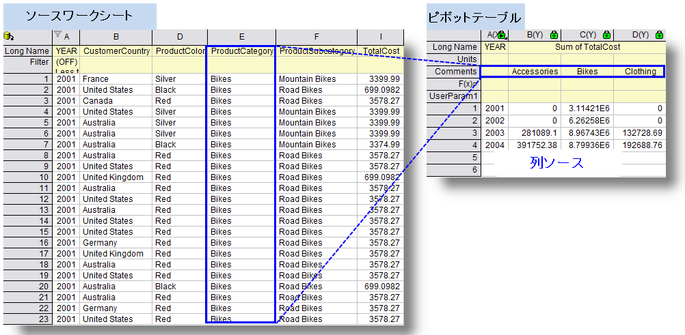
Note:
- このパートは、表示ボックスと5つのボタンを持つツールバーを含みます。これらの使用についての情報は、ピボットテーブルの行ソースセクションを確認してください。
- 列ソースの値は、デフォルトではコメント行に配置されます。しかし、オプションの列の情報を加えるのドロップダウンリストでロングネーム などの他のラベル行にすることもできます。
|
ピボットテーブルのデータソース
これはサマリー出力タイプでカウントが選択されていない場合にのみ有効です(Method 変数)。1次元の列から2次元の行列のようなピボットテーブルに要約されるデータ値です。
- ピボットテーブルにデータを構成する方法は、最大、最小、平均、合計によるデータのサマリーに似ています。下図は合計でデータをサマリーしたサンプルです。
- 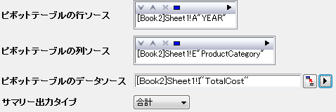
- 以下のサンプルでは、セル(2001, Bikes)の総費用は、次の条件で抽出したTotalCost 列のセルの合計です：ProductCategory は Bikes かつ YEAR が 2001
- 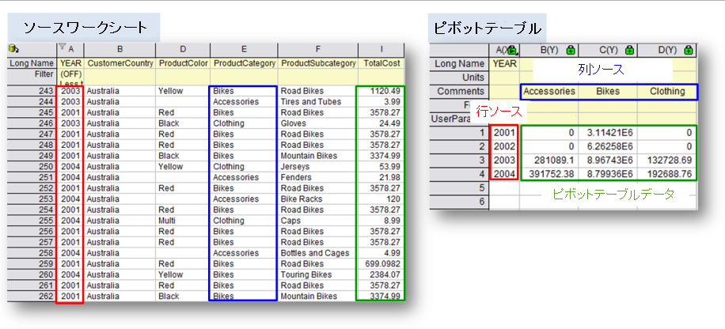
- 反対に、サマリー出力タイプにカウントが選択されていると、テーブルは、行ソースと列ソースに関連したセルの位置のカウント数で埋められます。
より小さな値をまとめる
より小さい値をまとめるは、似たような値を「その他」の列にまとめ、少しのカテゴリを表示します。詳細は以下のサンプルを参照してください。
- 方向の統合：「なし」でない場合、行カテゴリまたは列カテゴリいずれの選択ともに有効です。しかし、行とカテゴリー両方における小さい値の組み合わせは現在サポートされていません。
- モード：このドロップダウンリストで、値を要約する小さい値の組み合わせを指定します。カウント、合計、平均、最小、最大があります。
| Note:モードを選択すると、パーセント、参照行/列のパーセント、上位N、列/行ラベルなどのオプションを指定できます。モードドロップダウンリストの下にあり、選択されたモードに対応して変化します。
|
- 総和に対するパーセント：要約された値(カウント/合計/平均/最小/最大)のパーセントの行/列カテゴリーは、しきい値パーセントを越える全ての合計を説明され、残りはデフォルトでOthers カテゴリーに統合されます。モードドロップダウンリストの下のパーセントでしきい値パーセントを指定できます。
- 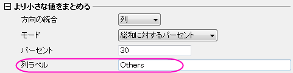
- 削減されたカテゴリのデフォルト名を変更するには、モードドロップダウンリストの下の行(または列)ラベルで新しい名前を指定します。 次のスクリーンショットでは、削減されたカテゴリーのデフォルト名がOther Smaller Itemに変更され、小さいパーセンテージの他のカテゴリーはこのカテゴリーに削減されます。
- 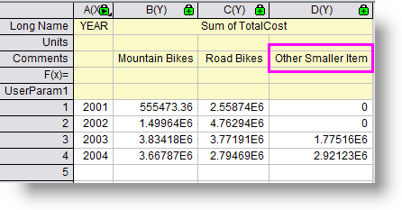
- 参照行/列のパーセント：参照列/行カテゴリー内の要約された値のパーセンテージの行/列カテゴリーはしきい値パーセントを超える全ての合計を説明し、リストされます。残りは削減され、Other(デフォルト)カテゴリーに統合されます。参照列/行の値に参照列/行カテゴリーを指定するために、表示された利用可能な値の一つを選択します。しきい値パーセントの編集と列名の削減については、総和に対するパーセントを参照してください。
- 総計の上位N件：各行/列カテゴリーの要約された値は順位づけされ、上位N行/列のカテゴリーがリストされます。上位Nと行(または列)ラベルは、モードドロップダウンリストの下で指定します。
- 参照列の上位N件：列/行参照カテゴリー内の各行/列カテゴリーの要約された値は順位づけされ、上位N行/列のカテゴリーがリストされます。上位Nと行(または列)ラベルは、モードドロップダウンリストの下で指定します。
- 参照行の値：モードで参照行/列のパーセントまたは参照行/列の上位N件が選択されている時に、参照行/列を指定します。
- パーセント：モードで総和に対するパーセントまたは参照行/列のパーセントが選択されている時に、より小さな値をまとめるパーセントを指定します。
- 列/行ラベル：より小さな値が統合された時に、削減されたカテゴリー名を指定します。
オプション
- 行合計の列追加：このオプションは行合計の列を追加します。
- 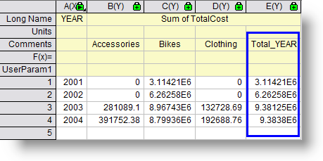
- 出力行のソート：このオプションは出力行の順番のソートを定義します。
- 行ラベルの昇順：このオプションは行ラベルの昇順で行をソートします。
以下のサンプルをみてください。Year を行ソースとして使用した場合、これは昇順にソートされます。以下のサンプルをみてください。1つ以上の範囲を行ソースとして選択した場合、ピボットテーブルは行ソースの順序を参照して構成されます。
- 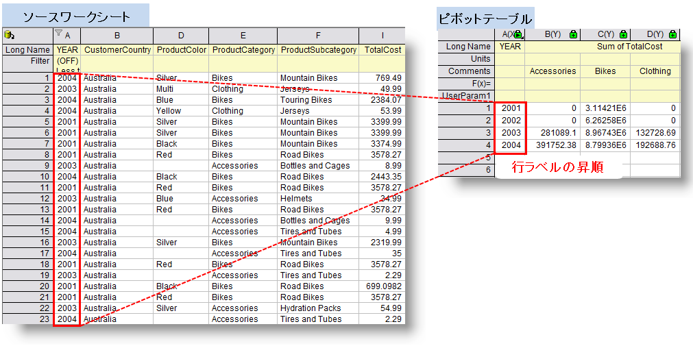
- 行ラベルの降順：このオプションは行ラベルの降順で行をソートします。行ラベルの昇順に似ていますが、ソートされたデータの順序は逆になります。
- 行合計による昇順：このオプションは行合計を昇順でソートします。この条件では、ピボットテーブルのデータソースとして数字のデータのみ許可されます。このオプションは、行合計の列追加のボックスの選択に関わらず、選択できます。
- 行合計による降順：このオプションは行合計を降順でソートします。行合計による昇順と同様、ピボットテーブルのデータソースとして数字のデータのみ許可されます。
- 列合計の行追加：行合計の列追加と同様、列合計のための行を追加します。
- 出力列のソート：出力行のソートと同様、なし以外を選択すると列ラベルまたは列合計の昇順または降順でソートします。
- 小数：列合計によって各列のデータを正規化し、率表記でレポートします。
- パーセント：列合計によって各列のデータを正規化し、パーセント表記でレポートします。
- 空白時ゼロを表示：空セルを欠損値ではなく0で表示します。サマリー出力タイプがカウント以外のときに利用できます。
- 行ソースの追加値：このオプションはあまり使用されませんが列ソースの追加値を参照してください。
- 列ソースの追加値：このオプションは、ソースデータ列で欠損した追加のカテゴリーを提供します。これは、全ての必要なカテゴリーが結果テーブル内にあるか確認する時に便利です。入力データにおける欠損カテゴリーは0(カウントや合計によるサマリーのとき)または、欠損値 "--" (最小や最大によるサマリーのとき)で表示されます。
次のようなデータセットがある場合を考えます(下の画像のソースワークシート)。これは、2001年から2004年の製品(Bike, Accessories, Clothing) の各国での売り上げデータです。各年における製品それぞれの総費用を表すサマリーを作成したいとします。列カテゴリーとしてYEAR 、行カテゴリーとしてCategories を指定します。 しかし、Accessories とClothing の2001年と2002年の売上履歴がありません。次の2つのケースは、列ソースの追加値を使用しているかどうかの異なる結果を表示します。
-
- ワークシートクエリを使用して、条件：YEAR <= 2002 でデータを表示し、新しく抽出されたデータをもとに、列追加値を指定せずに総費用の合計のピボットテーブルを作成します。 ピボットテーブルは、Accessories とClothingのカテゴリーを含めず、ソースワークシートに、YEAR が2001と2002の履歴があるデータであるBikesのカテゴリーのみを表示します。
- 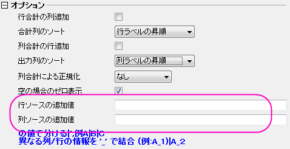
- 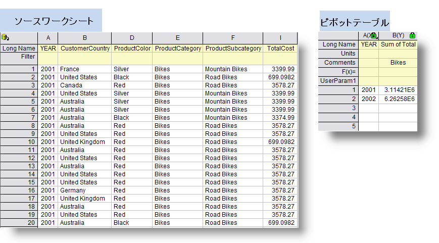
- 列追加値を指定して同じようなピボットテーブルを作成する場合、履歴の欠損に関わらず、ピボットテーブルは3つのカテゴリー全てを表示します。欠損のあるカテゴリーは合計０で表示されます。
- 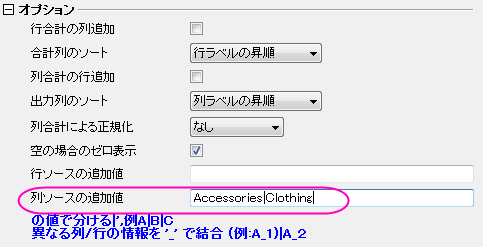

| Note:
列追加値の機能は、ピボットテーブルを使用してグラフを作図するときに非常に重要です。この場合、ソースワークシートのいくつかのカテゴリーの記録が完全でなくても、全てのカテゴリーを表示したいことがあります。列追加値の設定は、欠損データを自動的に0として扱い、関連するカテゴリはグラフにはデータグループとして表示されます。
|
- 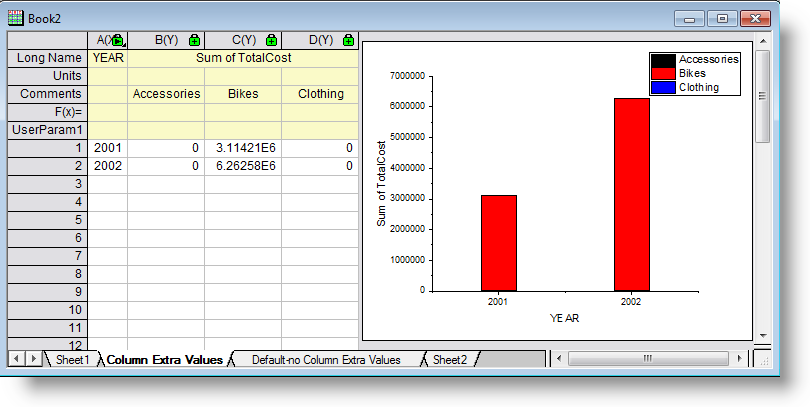
- 列情報を加える：列カテゴリーの名前は、デフォルトでピボットテーブルのコメントラベル行に入力されますが、カテゴリー名はこのドロップダウンリストで選択した他の列ラベル行に入力することができます。
- ロングネーム：列カテゴリー名をロングネームに出力します。
- 列のロングネームを追加：ソースワークシート内の列カテゴリーのロングネームを、ピボットテーブルのロングネームラベル行に追加します。
- ユーザ定義パラメータ：列カテゴリの他の情報(ソースワークシートの列カテゴリーのショートネームやロングネーム)を、ピボットテーブルのユーザ定義パラメータ行に出力します。
- 開始列:ユーザ定義パラメータのソース値を指定します。列情報を加えるでユーザ定義パラメータが選択された時にのみ有効です。
- ショートネーム：ソースワークシートの列カテゴリーのショートネームを、ユーザ定義パラメータの入力情報として選択します。
- ロングネーム：ソースワークシートの列カテゴリーのロングネームを、ユーザ定義パラメータの入力情報として選択します。
結果テーブルの出力先
結果ピボットテーブルを出力する場所を指定します。三角形のボタンをクリックして出力方法を指定します。
[<入力>]<入力>:現在のワークシートにピボットテーブルを入力します。
<新規>：現在のワークブックの新しいシートにピボットテーブルを出力します。
[<新規>]<新規>:新しいワークブックにピボットテーブルを出力します。